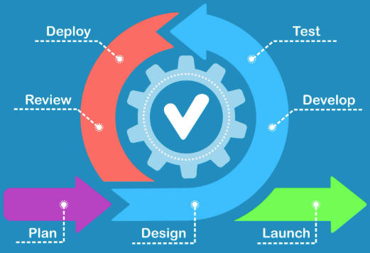

Sprint
Master
Resolva a lista de questões a seguir para concluir o módulo, e chegar mais perto do certificado!
Questão 1

A chamada “crise do software” foi um dos fatores que impulsionaram o surgimento das metodologias ágeis. Qual problema estava fortemente associado a essa crise?
© Sprint Masters 2026